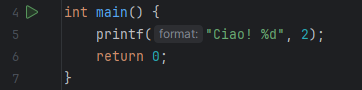
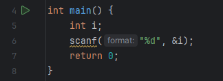
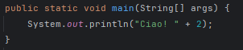
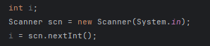
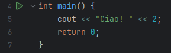
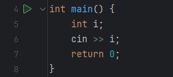
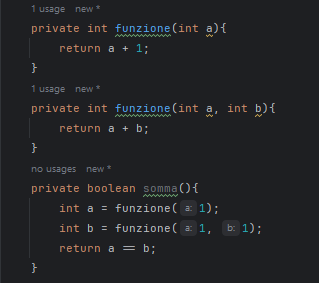
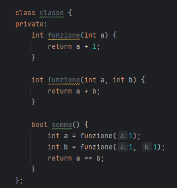

input
output
input
output
input
output
Non si può fare, possiamo però optare per inserire gli attributi in modo dinamico
input
output: true
input
output: true
Come abbiamo appena visto, è possibile dare a due funzioni lo stesso nome, questa cosa si chiama Overload.
Cos'è l'overload di operatori?, in parole semplici, c++ permette di fare l'overload sugli operatori matematici (e non)
Leggi gli operatori che lo permettono.
In pratica si tratta di applicare a quel simbolo (Es: +) un significato diverso, un esempio stupido? un + può diventare un -
In poche parole, una funzione può essere esempio quella che abbiamo usato in C per fare il bubble sort
Un metodo invece si trova all'interno nella classe in creaiamo l'oggetto.
Nell'esempio potremmo fare un getVarNellaClasse() che restituisca il valore di quella variabile, quello sarebbe un metodo,
richiamabile con nuovoPiu.getVarNellaClasse().